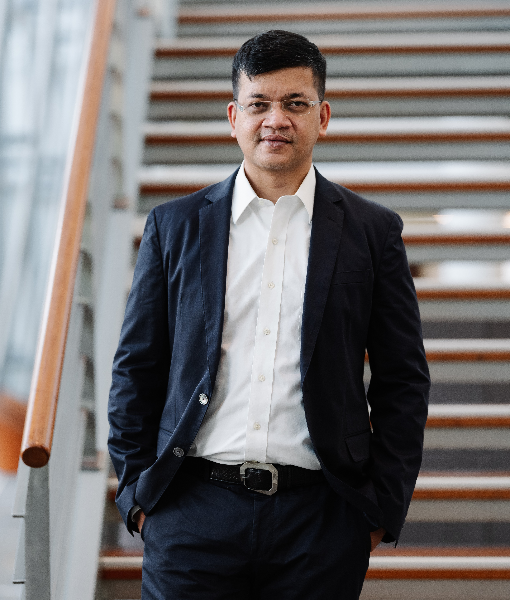

Your Name
Professor of Economics & Political Science at INSEAD
I am a Professor of Economics and Political Science at INSEAD. I have a Ph.D. in Economics from New York University, a Master's in Economics from the Delhi School of Economics, and a Bachelor's degree in Economics from Presidency College, Calcutta.
My research interests lie at the intersection of international trade, economic development, and politics. I have examined the importance of ideology and inequality for trade policies, the role of regional trading arrangements and the WTO in trade, and the various impediments to trade. Another stream of research has a developmental focus and examines issues related to governance, political instability, democracy, inequality, microfinance, poverty, and development. A third stream of research examines the role played by international trade and technological change in accelerating inequality between skilled and unskilled workers. Currently, I am working on three projects: 1) the rise of Chinese exports, 2) trade creation vs. trade diversion of various trading arrangements, and 3) asset adjustment decisions of airlines during the Covid-19 health crisis.
At INSEAD, I teach microeconomics (Prices & Markets) and Game Theory to MBA and EMBA audiences. I also teach modules on Economic Growth, Geopolitical Risks, the Natural Resource Curse, Rise in Inequality, Commodity Price Cycles, Game Theory, and Financial Crisis to executive audiences in Europe, Asia, and the Middle East.y in the MBA and EMBA programs. I specialize in designing and directing programs for government agencies. I directed the Firefly program for the Economic Development Board of Singapore, a program for the Ministry of Trade and Industry, Singapore, and one for Malysian Civil Service. I also co-directed one of the flagship open enrollment programs at INSEAD targeted at senior executives called Leading Business Transformation in Asia. I won the Best Teacher Award for the MBA and EMBA core classes multiple times.
I direct multiple programs at INSEAD. One is an open-enrollment program called Crisis Management for Boards. Others are company-specific programs for Deutsche Bank, ISB, Sarawak, and Capital Group.
In addition, I have worked at the World Bank's Latin American and Caribbean Division and the Development Research Group and as a writer for Oxford University Press. I helped Aral/BP in their bid for gas stations in Germany.
Research
My primary research fields are [Primary Field 1] and [Primary Field 2]. My secondary fields include [Secondary Field 1] and [Secondary Field 2].
Publications
Working Papers
Work in Progress
Teaching
- Course Name (Level, Year)
- Another Course (Level, Year)
- Course Name (Level, Year)
Contact
Office: Building Name, Room Number
Address: Department Name
Institution Name
Street Address
City, State ZIP
Email: your.email@institution.edu
Office Hours: Day, Time or By Appointment